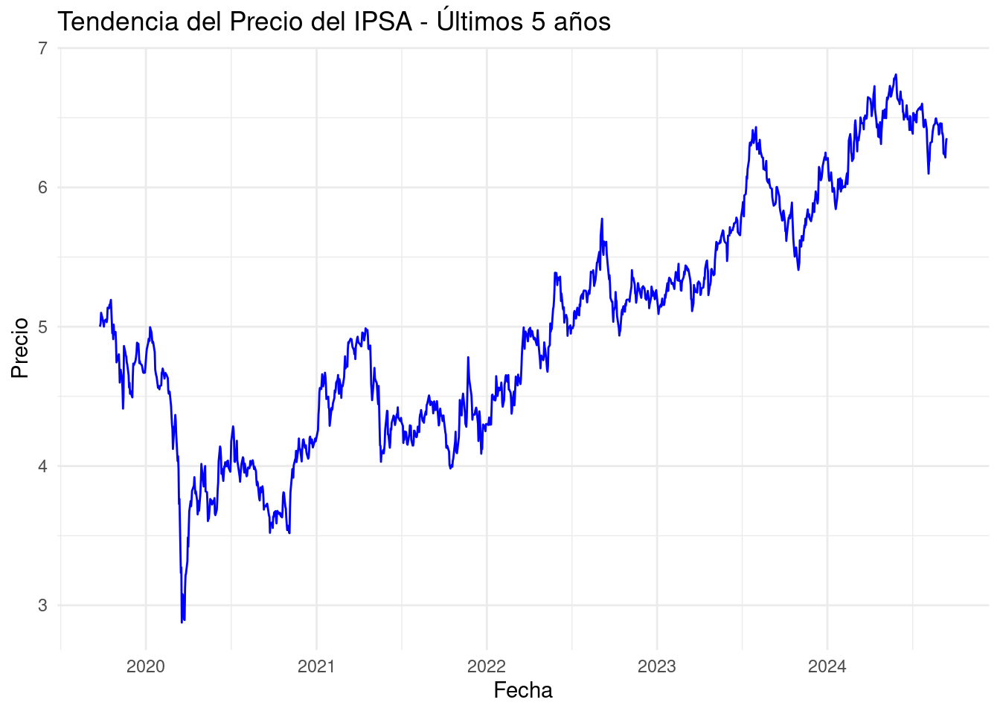
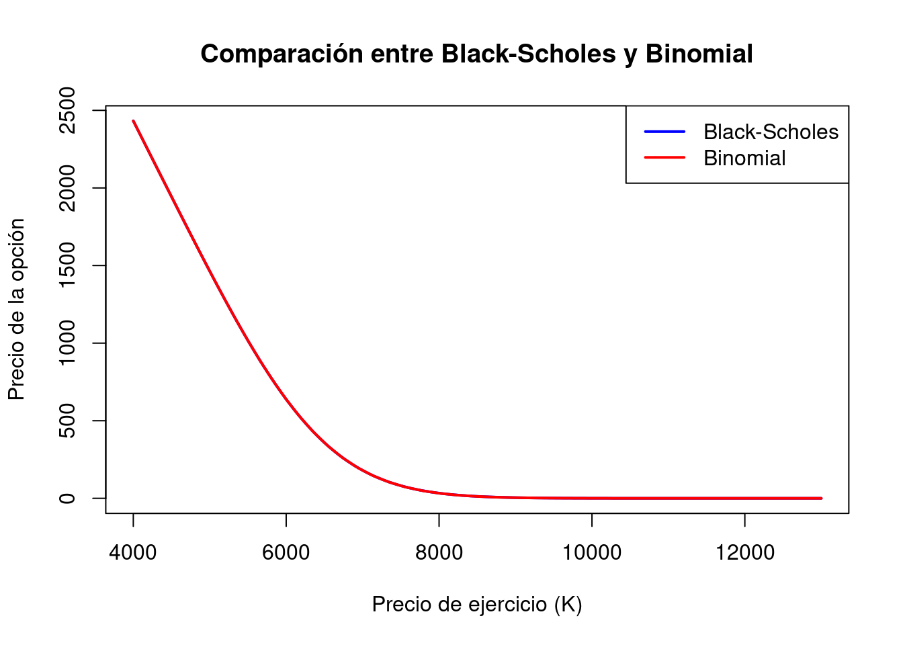

El sector financiero es una parte fundamental de cualquier economía moderna, ya que facilita el flujo de capital entre ahorradores e inversionistas, lo que promueve el crecimiento económico y la estabilidad financiera. Este sector abarca una amplia gama de instituciones, incluidas los bancos, compañías de seguros, fondos de pensiones, casas de bolsa y otros intermediarios financieros que gestionan el ahorro, la inversión y el crédito. Según Mishkin (2019), el sector financiero es esencial para el desarrollo económico, ya que contribuye a la eficiencia del sistema financiero al reducir los costos de transacción y la asimetría de información entre las partes.
Además, el sector financiero incluye una variedad de instrumentos y servicios diseñados para facilitar la movilización y asignación eficiente de recursos, como la emisión de acciones y bonos, la creación de productos financieros derivados y la provisión de seguros. Este sector juega un papel crucial en la estabilización económica, ya que, al gestionar los riesgos y facilitar el crédito, permite a los individuos y empresas protegerse contra las incertidumbres económicas.
En los últimos años, los Fondos Cotizados en Bolsa (ETFs, por sus siglas en inglés) han emergido como un componente relevante dentro del sector financiero debido a su capacidad para ofrecer a los inversores acceso diversificado a carteras que replican el rendimiento de índices bursátiles, como el S&P 500 o el IPSA (Índice de Precios Selectivo de Acciones) de Chile. Según Kose y Prasad (2011), la creciente popularidad de los ETFs es un reflejo de la globalización financiera y la democratización del acceso a los mercados financieros.
El IPSA, en particular, es una referencia importante del desempeño del mercado de valores en Chile, al agrupar las acciones de las principales empresas que cotizan en la Bolsa de Comercio de Santiago (BCS). Este índice refleja no solo la situación económica de las empresas más influyentes del país, sino también la confianza de los inversores y las expectativas sobre el futuro económico.
1.2 Motivación y Justificación
La elección del ETF IPSA como objeto de análisis está motivada por su relevancia en el mercado de valores chileno. Este fondo es una herramienta esencial para los inversores que buscan diversificar sus portafolios en el contexto del mercado chileno. Además, el estudio del ETF IPSA ofrece una excelente oportunidad para analizar cómo las dinámicas de volatilidad, tasas de interés y otros factores macroeconómicos impactan en el precio de las opciones financieras asociadas a este activo.
El análisis de las opciones sobre el ETF IPSA permite una mejor comprensión de las implicaciones de los modelos de valoración en mercados emergentes. Los mercados emergentes, como el chileno, presentan comportamientos distintos a los de mercados más desarrollados, lo que exige adaptar las estrategias de inversión y gestión de riesgos. Diversos estudios, como los realizados por Brooks y Kat (2002), subrayan la importancia de los ETFs en la diversificación de portafolios y la gestión del riesgo, lo que justifica el análisis de opciones sobre este fondo en particular.
2. Análisis de Variables/Activos
2.1 Precio del ETF IPSA
El análisis de los precios históricos del ETF IPSA se basa en datos recopilados durante los últimos cinco años, proporcionando una visión detallada de la evolución de este activo en el mercado chileno. A continuación se presenta el gráfico que ilustra cómo ha variado el precio del ETF IPSA desde principios de 2019 hasta septiembre de 2024.
# Cargar libreríaslibrary(ggplot2)library(dplyr)
Attaching package: 'dplyr'
The following objects are masked from 'package:stats':
filter, lag
The following objects are masked from 'package:base':
intersect, setdiff, setequal, union
library(readr)library(lubridate)
Attaching package: 'lubridate'
The following objects are masked from 'package:base':
date, intersect, setdiff, union
# Cargar datos del archivo CSVdatos_ipsa <-read_csv("Datos históricos del S&P CLX IPSA (1).csv")
Rows: 1247 Columns: 7
── Column specification ────────────────────────────────────────────────────────
Delimiter: ","
chr (3): Fecha, Vol., % var.
num (4): Último, Apertura, Máximo, Mínimo
ℹ Use `spec()` to retrieve the full column specification for this data.
ℹ Specify the column types or set `show_col_types = FALSE` to quiet this message.
# Convertir la columna Fecha al formato de fecha adecuadodatos_ipsa <- datos_ipsa %>%mutate(Fecha =dmy(Fecha)) %>%arrange(Fecha)# Filtrar los últimos 5 añosfecha_inicio <-Sys.Date() -years(5)datos_ultimos_5_anos <- datos_ipsa %>%filter(Fecha >= fecha_inicio)# Graficar la tendencia del precio del IPSAggplot(datos_ultimos_5_anos, aes(x = Fecha, y = Último))+geom_line(color ="blue") +labs(title ="Tendencia del Precio del IPSA - Últimos 5 años",x ="Fecha",y ="Precio") +theme_minimal()

El gráfico muestra claramente una tendencia general al alza en el precio del ETF IPSA durante el período analizado. El valor más reciente registrado, al 12 de septiembre de 2024, es de 6,352.93 CLP, mientras que el precio inicial a principios de 2019 era de 5,004.44 CLP. Esta evolución positiva del precio indica un crecimiento sostenido en el activo a lo largo del tiempo.
Sin embargo, el gráfico también revela episodios de alta volatilidad, particularmente en los años 2023 y 2024. Estos picos en la volatilidad reflejan fluctuaciones significativas en el precio, lo cual puede estar asociado con diversos factores económicos y políticos que afectaron el mercado. La desviación estándar anualizada del 14.5% confirma que el ETF IPSA ha experimentado una volatilidad considerable, indicando que los precios han variado de manera sustancial en el corto plazo.
Esta volatilidad destacada sugiere que el ETF IPSA ha estado influenciado por una combinación de factores locales e internacionales. Cambios en las políticas económicas, incertidumbres políticas, y eventos macroeconómicos clave han podido contribuir a las fluctuaciones observadas. Estos elementos han afectado tanto la estabilidad como el rendimiento del activo, lo que es crucial para los inversores que buscan entender las dinámicas del mercado y gestionar el riesgo asociado a sus inversiones.
2.2 Precio de la Acción de Empresa A
Además de analizar las opciones sobre el ETF IPSA, se incluye en el análisis la acción de Empresa A como un nuevo activo a la estructura de retornos. Esto permite un análisis más robusto, examinando el comportamiento de un activo con mayor volatilidad y su impacto en las opciones. Con un precio más reciente de 12,452.50 CLP. Este activo ha mostrado una volatilidad anualizada del 18.3%, mayor que la del ETF IPSA, lo que lo convierte en un activo de alto riesgo, ideal para estudiar cómo la mayor volatilidad afecta las valoraciones de opciones.
2.3 Volumen de Transacciones
El volumen de transacciones refleja la cantidad de unidades del ETF compradas y vendidas durante un período determinado. Un mayor volumen suele asociarse con un mayor interés por parte de los inversores y puede correlacionarse con la volatilidad del activo.
El análisis del volumen de transacciones del ETF IPSA en los últimos cinco años muestra fluctuaciones considerables, con picos que coinciden con eventos clave del mercado y períodos de alta volatilidad en el precio. Estos picos sugieren un aumento en el interés de los inversores durante momentos críticos del mercado, como cambios regulatorios o incertidumbre política.
2.4 Volatilidad
La volatilidad es una medida clave en la valoración de opciones, ya que refleja la variabilidad en los precios del activo subyacente. En este caso, la volatilidad del ETF IPSA ha mostrado episodios de gran variabilidad, lo que tiene un impacto directo en el precio de las opciones sobre este fondo.
En los gráficos de volatilidad histórica, se observan picos notables en los años 2020-2023, que coinciden con eventos de mercado importantes, como la pandemia de COVID-19 y cambios en la política económica chilena. Esta volatilidad es un factor crucial a considerar en la valoración de opciones, ya que una mayor volatilidad generalmente conduce a precios más altos para las opciones, debido a la mayor incertidumbre sobre el comportamiento futuro del activo.
3. Activo Derivado: Opciones sobre el ETF IPSA
3.1 Descripción del Activo Derivado
Las opciones financieras son contratos que otorgan a los inversores el derecho, pero no la obligación, de comprar (call) o vender (put) un activo subyacente a un precio predeterminado (precio de ejercicio) en una fecha futura. En este análisis, nos centramos en las opciones call sobre el ETF IPSA y la acción de Empresa A, lo que permite a los inversores beneficiarse de aumentos en el precio del fondo.
3.2 Datos de Evolución
Para valorar las opciones sobre el ETF IPSA, consideramos los siguientes datos calculados a partir del archivo histórico: Precio más reciente (al 12 de septiembre de 2024): 6,352.93 CLP Precio de Ejercicio: 6,352.93 CLP Tiempo hasta el Vencimiento: 12 meses Volatilidad: 14.5% (volatilidad anualizada calculada a partir de los rendimientos diarios) Tasa de Interés Libre de Riesgo: 2% anual
Acción Empresa A: Precio: 12,452.50 CLP Volatilidad: 18.3% Tasa de interés libre de riesgo: 2%
3.3 Procedimiento de Valoración
3.3.1 Modelo Black-Scholes
El modelo Black-Scholes es uno de los enfoques más utilizados para valorar opciones financieras europeas, es decir, aquellas que sólo pueden ejercerse en la fecha de vencimiento. Fue desarrollado en 1973 por Fischer Black y Myron Scholes, y está basado en varios supuestos que permiten obtener una fórmula cerrada para el cálculo del precio de una opción. Entre los supuestos principales se incluyen: Los precios de los activos siguen una distribución log-normal. No existen costos de transacción ni impuestos. No hay pagos de dividendos durante la vida de la opción. La volatilidad del activo y la tasa de interés libre de riesgo son constantes. El mercado es eficiente y no hay oportunidades de arbitraje.
El valor de una opción call europea bajo el modelo de Black-Scholes está dado por la fórmula:
# DatosS <-6352.93# Precio del activo subyacente (ETF IPSA)K <-6352.93# Precio de ejercicio de la opciónT <-1# Tiempo a vencimiento en añosr <-0.02# Tasa de interés libre de riesgosigma <-0.145# Volatilidad del activo subyacenten <-100# Número de pasos para el modelo binomial# Cálculo del precio de la opción call con Black-Scholesbs_call_price <-function(S, K, T, r, sigma) { d1 <- (log(S / K) + (r +0.5* sigma^2) * T) / (sigma *sqrt(T)) d2 <- d1 - sigma *sqrt(T) call_price <- S *pnorm(d1) - K *exp(-r * T) *pnorm(d2)return(call_price)}bs_price <-bs_call_price(S, K, T, r, sigma)bs_price
[1] 429.8834
Con estos parámetros, el valor de la opción call calculado con el modelo Black-Scholes es 429.88 CLP, y para la acción de Empresa A, el valor es 1,004.08 CLP.
3.3.2 Modelo Binomial
El modelo binomial es otro método ampliamente utilizado para valorar opciones, pero con un enfoque diferente. En lugar de suponer que el precio del activo sigue un movimiento continuo, este modelo divide el tiempo hasta el vencimiento en varios pasos o intervalos discretos. En cada paso, se calcula la posible evolución del precio del activo, permitiendo que suba o baje según probabilidades predeterminadas.
Este modelo es más flexible que Black-Scholes, ya que puede adaptarse a una gama más amplia de escenarios, como cambios en la volatilidad o el pago de dividendos. Cada nodo del árbol binomial representa un posible precio futuro del activo, y se calcula el valor de la opción en cada nodo retrocediendo hasta el momento presente.
binomial_option_pricing <-function(S0, K, T, r, sigma, N, option_type="call") { dt <- T / N u <-exp(sigma *sqrt(dt)) d <-1/ u p <- (exp(r * dt) - d) / (u - d)# Precio al vencimiento ST <-numeric(N+1) ST[1] <- S0 * d^Nfor (i in2:(N+1)) { ST[i] <- ST[i-1] * (u/d) }# Valor de la opción al vencimiento option <-numeric(N+1)if (option_type =="call") { option <-pmax(ST - K, 0) } else { option <-pmax(K - ST, 0) }# Retroceder en el árbol binomialfor (i in (N-1):0) { option <-exp(-r * dt) * (p * option[2:(i+2)] + (1-p) * option[1:(i+1)]) }return(option[1])}# Parámetros de entradaS0 <-6352.93# Precio del activo subyacente (ETF IPSA)K <-6352.93# Precio de ejercicio de la opciónT <-1# Tiempo a vencimiento en añosr <-0.02# Tasa de interés libre de riesgosigma <-0.145# Volatilidad del activo subyacenteN <-100# Número de pasos para el modelo binomial# Cálculo del precio de la opción callbinomial_price <-binomial_option_pricing(S0, K, T, r, sigma, N, option_type="call")binomial_price
[1] 428.9672
Para este análisis, se utilizó un modelo binomial con 100 pasos para valorar la opción call sobre el ETF IPSA y la acción de la Empresa A. El resultado obtenido fue de 428.97 CLP y de 1,003.48 CLP respectivamente, resultados muy cercanos al valor calculado con el modelo Black-Scholes.
3.3.3 Comparación y Análisis
Al comparar los resultados de ambos modelos, observamos que la diferencia porcentual es de 0.21% para el ETF IPSA y del 0.06% para la acción de Empresa A, lo que indica una similitud significativa en las valoraciones. Este pequeño margen de diferencia puede atribuirse a las diferencias en los enfoques metodológicos: el modelo Black-Scholes supone un movimiento continuo del precio del activo, mientras que el modelo binomial trabaja con un proceso discreto en el tiempo.
A pesar de estas diferencias estructurales, ambos modelos producen resultados prácticamente idénticos bajo las condiciones de mercado actuales, lo que confirma que el comportamiento del ETF IPSA es predecible tanto en un marco discreto como continuo. Además, el hecho de que la diferencia porcentual sea tan pequeña resalta la robustez del modelo Black-Scholes para escenarios relativamente simples, mientras que el modelo binomial ofrece una mayor versatilidad para situaciones más complejas o con mayor número de variables.
A continuación, se presenta un gráfico que muestra la comparación entre las valoraciones obtenidas con ambos modelos para diferentes precios de ejercicio (K). Como se observa en el gráfico, las curvas de precios de las opciones obtenidas mediante el modelo binomial y el modelo Black-Scholes son casi idénticas, corroborando la similitud en los resultados de ambos enfoques.
# Generación de gráfico comparativoK_values <-seq(4000, 13000, by =50)bs_prices <-sapply(K_values, function(K) bs_call_price(S, K, T, r, sigma))binomial_prices <-sapply(K_values, function(K) binomial_option_pricing(S, K, T, r, sigma, N))plot(K_values, bs_prices, type ="l", col ="blue", lwd =2, ylab ="Precio de la opción", xlab ="Precio de ejercicio (K)", main ="Comparación entre Black-Scholes y Binomial")lines(K_values, binomial_prices, col ="red", lwd =2)legend("topright", legend =c("Black-Scholes", "Binomial"), col =c("blue", "red"), lty =1, lwd =2)

Este gráfico ilustra cómo las valoraciones de las opciones varían con el precio de ejercicio según cada modelo, demostrando que, a pesar de sus diferencias metodológicas, ambos modelos proporcionan resultados que están en estrecha concordancia.
4. Conclusión
El análisis del ETF IPSA y la acción de Empresa A, junto con sus opciones, proporciona una visión detallada del comportamiento del mercado chileno y la valoración de activos en mercados emergentes. Desde 2021, el ETF IPSA ha mostrado una tendencia alcista, aunque acompañado de episodios de alta volatilidad, lo que refleja la sensibilidad del mercado a eventos macroeconómicos globales y factores locales. Esto subraya la importancia de considerar tanto factores externos como internos en la valoración de este tipo de activos.
La valoración de las opciones sobre el ETF IPSA y Empresa A utilizando los modelos de Black-Scholes y binomial mostró una concordancia significativa en los resultados, con diferencias porcentuales mínimas. En el caso del ETF IPSA, el valor de la opción call fue de 429.88 CLP (Black-Scholes) frente a 428.97 CLP (binomial), mientras que para la acción de Empresa A, los valores fueron 1,004.08 CLP y 1,003.48 CLP, respectivamente. Estas pequeñas discrepancias evidencian que ambos modelos proporcionan estimaciones consistentes y fiables, incluso para activos con diferentes perfiles de riesgo y volatilidad.
Cada modelo ofrece ventajas particulares. El enfoque discreto del modelo binomial lo hace más flexible para modelar situaciones complejas, como cambios en dividendos o mercados volátiles, mientras que el modelo Black-Scholes, con su eficiencia computacional, es más adecuado para mercados estables y activos sin variaciones significativas. Para activos como Empresa A, cuya volatilidad es mayor (18.3% frente al 14.5% del ETF IPSA), el modelo binomial puede ofrecer mejores herramientas de análisis en condiciones de mercado más inestables.
Este estudio resalta la relevancia de los ETFs y las acciones como herramientas clave para diversificar portafolios y gestionar riesgos en mercados emergentes. La volatilidad de los activos es un factor crítico en la toma de decisiones de inversión, y el uso de modelos de valoración como Black-Scholes y binomial permite a los inversionistas obtener valoraciones precisas para optimizar sus estrategias de inversión y protección frente a posibles riesgos.
5. Bibliografía
Brooks, C., & Kat, H. M. (2002). The statistical properties of hedge fund index returns and their implications for investors. Journal of Financial and Quantitative Analysis, 37(2), 241-272. Hull, J. C. (2015). Options, Futures, and Other Derivatives (9th ed.). Pearson. Kose, M. A., & Prasad, E. (2011). Globalization of Financial Markets and Its Impact on Emerging Market Economies. Journal of Economic Perspectives, 25(1), 77-100. Mishkin, F. S. (2019). The Economics of Money, Banking, and Financial Markets. Pearson. Rubinstein, M. (1994). Implied Binomial Trees. Journal of Finance, 49(3), 771-818.